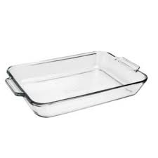
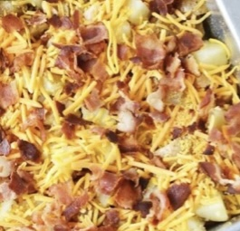

If lactose intolerant, it would be best to leave the cheese off.
1 lb boneless chicken cubed
6-8 medium skin on red potatoes,
cut in 1/2 cubes
1/3 c olive oil
1 1/2 tsp salt
1 tbsp black pepper
1 tbsp paprika
2 tbsp garlic powder
1 tbsp hot sauce
2 c fiesta blend cheese
1 c crumbled bacon pieces
1 c diced onion
My mom found this recipe almost 7 years ago, however it is still one of our favorites. We both love cheese, bacon, chicken, and potatoes; so it’s the perfect casserole. It’s only my mom and I, and this dish makes a lot of food. So, we have leftovers for lunch the next day, and it still tastes so good warmed up in the microwave. One time, my friend came over when we were having this for dinner, and she also absolutely loved it! This dish was even one of my birthday presents to her a couple years ago.
Preheat oven to 400 degrees.
Spray a 9x13 baking dish with cooking spray.
In a large bowl, mix together the olive oil, salt, pepper,
paprika, garlic powder, and hot sauce.
Add the potatoes and chicken, and stir to coat.
Scoop the potatoes into the baking dish.
Bake the potatoes and chicken for 55-60 minutes,
stirring every 20 minutes, until cooked through.
Top with cheese and bacon, and return to the oven
for 5 minutes or until the cheese is melted.
Top with green onions and enjoy!